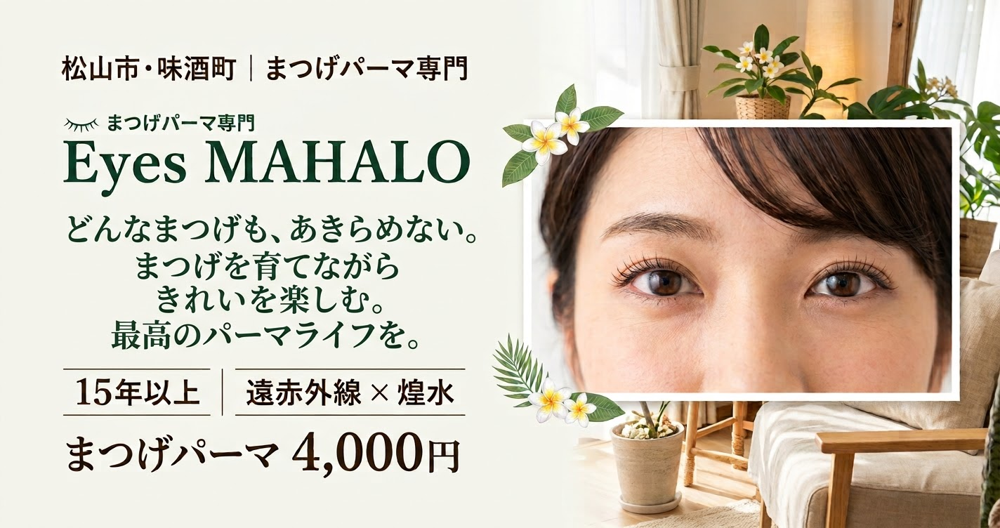
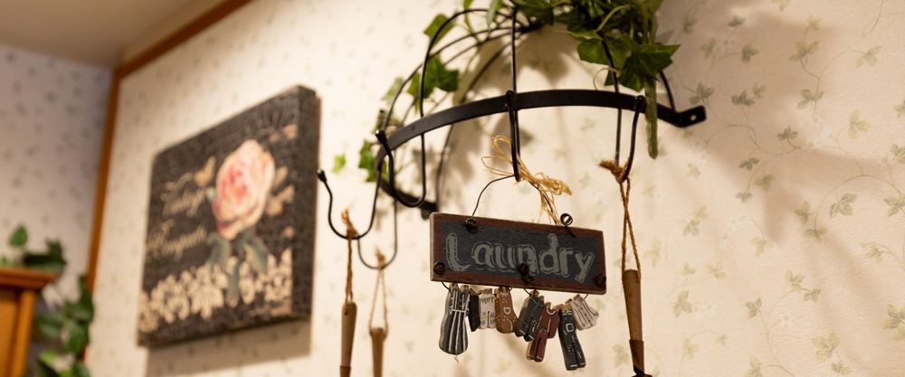
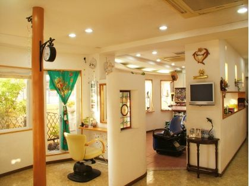
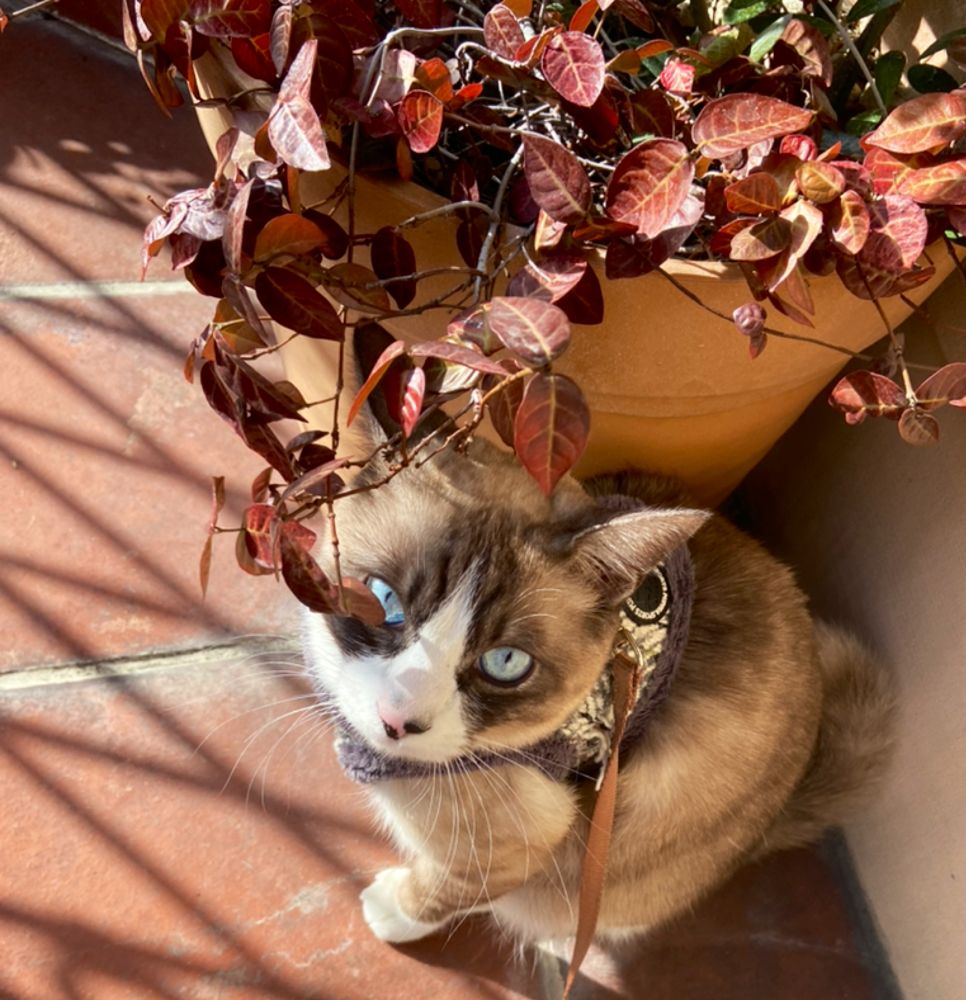
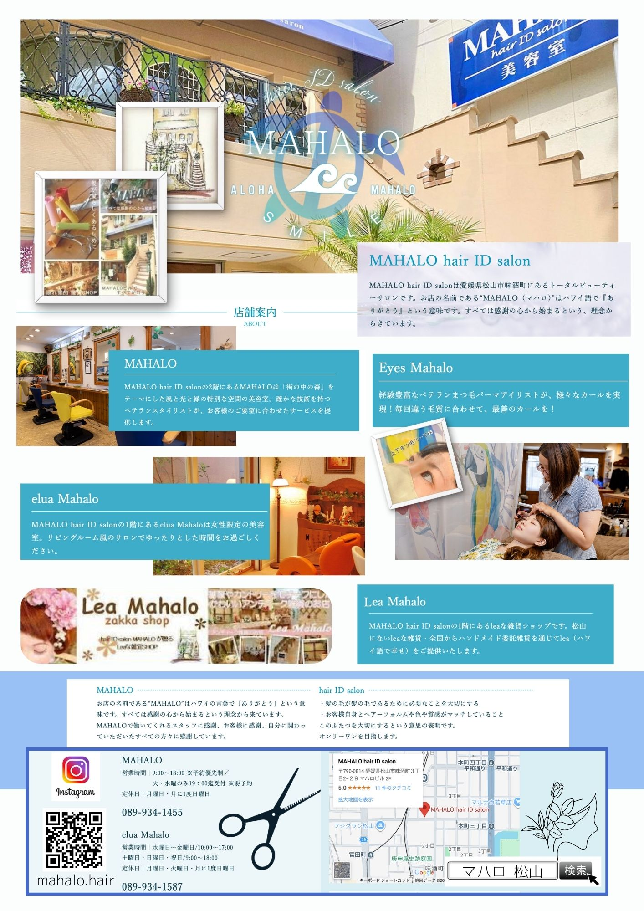

Eyes MAHALOについて
まつげの状態に合わせて、似合うカールを考えます。
Eyes MAHALOは、愛媛県松山市味酒町にある、まつげパーマ専門の施術スペースです。
まつげパーマ歴15年以上の中岡有里が、まつげの状態や生え方、目元のバランスを見ながら、似合うカールを一緒に考えます。
同じロッド、同じ強さで施術するのではなく、その人に合う仕上がりを探すことを大切にしています。
完全予約制ですが、空きがあれば当日の予約も可能です。「今からいいですか？」もLINEでご相談ください。
お悩みから選ぶ
こんなお悩み、ありませんか？
短い・細い
長さや毛質で、向いているロッドや仕上がりは変わります。目頭や細い毛も含め、今のまつげを確認します。
硬い・下向き
生え方や毛質でカールのつき方には個人差があります。ご希望を伺いながら、ロッドや方法を調整します。
左右で上がり方が違う
生え癖や生え替わりのタイミングで、仕上がりに差が出ることがあります。必要に応じて左右でロッドや強さを変えます。
根元からぱっちり
小さめのロッドなどで調整する方法があります。まぶたの形やまつげの長さで適した方法は変わります。
まぶたに当たるのが心配
強く上げれば理想の目元になるとは限りません。ロッドの大きさを調整し、毛先とまぶたの距離も考えます。
最初から「無理」と決めつけず、今のまつげでできることを一緒に考えます。
遠赤外線 × 煌水（キラ水）
ヘッドスパとの同時施術も人気です。

遠赤外線と煌水を取り入れたまつげパーマを行っています。まつげだけでなく、キラ水ヘッドスパとの同時施術も人気です。
「ヘッドスパも一緒に受けたい」という方は、予約時にご相談ください。
施術の感じ方や仕上がりには個人差があります。特定の美容効果を保証するものではありません。
特徴まとめ
Eyes MAHALOはこんなお店です
| 料金 | 遠赤外線まつげパーマ 4,000円／根元パーマ 3,000円／回数券は1回 3,500円（500円お得） |
|---|---|
| 施術歴 | まつげパーマ歴15年以上のベテランアイリストが担当します |
| 予約 | 完全予約制。LINE予約が基本で、当日の「今からいいですか？」も相談できます |
| 対応時間 | 7:30〜19:30（月〜土）。日・祝は要相談、早朝・夜間も相談可。営業は予約時間のみ |
| 場所 | 古町駅・フジグラン松山から徒歩約3分。駐車場あり |
| 同時施術 | ヘッドスパの同時施術、ヘアカラー中の同時施術も相談できます |
| 子連れ・ペア | お子様連れOK。親子・友人とのペア施術も相談できます |
サロンの様子
MAHALOビルの1階です。








※写真はすべてMAHALOの実際の店舗・施術の様子です。
お客様の声
初めてのサロン選びでも、相談しやすいように。
ミニモに掲載されたお客様の口コミから、一部を要約して紹介します。
松山に引っ越して初めてのまつげパーマで不安もあったが、丁寧に施術してもらえた、という声。
ミニモの口コミより（30代〜50代の女性）
根元からしっかり上げてもらえて気持ちも上がった。まつげの状態を細かく教えてもらえた、という声。
ミニモの口コミより
口コミは各サイトのお客様の個人的な感想です。すべての方に同じ仕上がりや体験を保証するものではありません。
担当アイリスト
中岡 有里
まつげパーマ歴15年以上。
短い、細い、硬い、左右差がある。さまざまなまつげと向き合ってきた経験をもとに、一人ひとりに合うカールを考えています。
前回と同じ施術がいつも最適とは限りません。大切にしているのは、最初からできないと決めつけず、今のまつげに合う方法を探すことです。
「こんなまつげでも上がるかな？」
「以前のパーマが思ったようにならなかった」
そんな相談からでも大丈夫です。
よくある質問
ご予約の前に
初めてでも大丈夫ですか？
はい。希望の仕上がりや不安な点を相談しながら、施術を検討できます。どんなカールがよいか分からなくても、お気軽にご相談ください。
まぶたが重くても、まつげは上がりますか？
まぶたの形やまつげの長さ、生え方で仕上がりは異なります。ロッドの種類や大きさを調整できる場合があるので、目元の状態を見ながら相談しましょう。
左右で上がり方が違うのはなぜ？
生え癖や毛質、生え替わりのタイミングが左右で違うためです。状態に応じて、左右で調整する方法があります。
まつげが短くても施術できますか？
長さや状態でできる施術は変わります。今のまつげを確認したうえで、可能な方法をご相談します。
根元パーマと通常のまつげパーマの違いは？
根元の立ち上がりを重視したい方、伸びてきた根元のメンテナンスを考えている方には、根元パーマが選択肢になります。
どのくらい持ちますか？
毛質や生え替わり、日々の扱い方で変わり、個人差があります。状態に合わせたメンテナンス時期をご相談ください。
月曜日にも予約できますか？
営業は予約時間のみで、ご相談に応じます。月曜日や朝・夕方の時間帯も、希望日時を添えてLINEでお問い合わせください。
親子や友人と一緒に受けられますか？
ペア施術もご相談いただけます。希望日時と人数を、事前にLINEでお知らせください。
相談だけでもいいですか？
もちろんです。メニュー選びやまつげのお悩みなど、LINEからお気軽にどうぞ。
当日でも予約できますか？
空きがあれば可能です。「今からいいですか？」でも、まずはLINEでご相談ください。完全予約制のため、来店前の連絡をお願いします。
子連れでも大丈夫ですか？
お子様連れOKです。予約時にLINEでお知らせください。ペア施術も相談できます。
アクセス
松山市味酒町、古町駅から徒歩3分。
- 店名
- Eyes MAHALO
（まつげパーマ専門） - 住所
- 〒790-0814
愛媛県松山市味酒町3-2-29
MAHALOビル1階 - アクセス
- フジグラン松山から徒歩約3分
古町駅から徒歩約3分 - 駐車場
- あり。場所と入口は、ご予約時にLINEでご案内します。
- 対応時間（営業時間）
- 7:30〜19:30（月〜土）／日・祝は要相談
早朝・夜間も相談可 ※完全予約制
※営業は予約時間のみです - お子様連れ
- OKです。予約時にLINEでお知らせください。
- 電話
- 📞 電話で問い合わせる
LINE予約を優先してください - ご予約
- 完全予約制
ご予約・ご相談
まつげの悩みを、まずは聞かせてください。
「根元から上げたい」「自然なカールがいい」
「左右差が気になる」
「自分に合うメニューが分からない」
そんなご相談からでも大丈夫です。希望の日時があれば、メッセージに添えてお送りください。営業は予約時間のみで、ご相談に応じます。「今からいいですか？」のような当日の希望も、まずはLINEでご相談ください。
ボタンを押すと「LPから来ました」と入力された状態でLINEが開きます。そのまま送信してください（文が消えていたら、その一言だけ送ってください）。

クチコミをいただけると嬉しいです
ご来店ありがとうございます。施術の感想をGoogleマップのクチコミに書いていただけると、今後の励みになります。
まつげの投稿を集めました。
施術の様子や、まつげのお悩みへの投稿です。タップするとInstagramで開きます。
まつげパーマのビフォーアフター（MAHALO公式Instagram）
まつげパーマのビフォーアフター動画です。施術前と後のカールの違いが見られます。
松山まつげパーマの投稿（MAHALO公式Instagram）
松山まつげパーマの施術の様子を動画で紹介しています。
小学生のまつげパーマ・逆まつげの投稿（MAHALO公式Instagram）
小学生のまつげパーマの様子です。逆まつげのご相談も受けています。
まつげパーマ・キッズ・ペア割の投稿（MAHALO公式Instagram）
まつげパーマのご案内です。お子さま連れの施術やペア割の相談もできます。
まつげパーマの投稿（有里のInstagram）
店主・中岡有里による、まつげパーマの施術動画です。
まつげパーマ・逆まつげの投稿（有里のInstagram）
逆まつげとまつげパーマについての投稿です。
まつげパーマの投稿（MAHALO公式Instagram）
まつげパーマの施術の様子を動画で紹介しています。
まつげパーマの投稿（MAHALO公式Instagram）
まつげパーマの施術の様子を動画で紹介しています。
松山まつげパーマの投稿（MAHALO公式Instagram）
松山まつげパーマの施術の様子を動画で紹介しています。
上下まつげパーマ・逆まつげの投稿（MAHALO公式Instagram）
上下のまつげパーマと、逆まつげ・まつげの生え癖についての投稿です。
まつげパーマの投稿（MAHALO公式Instagram）
まつげパーマ（マツパ）の施術の様子を動画で紹介しています。
まつげパーマの投稿（MAHALO公式Instagram）
まつげパーマの仕上がり写真です。
まつ毛パーマ専門メニューの投稿（MAHALO公式Instagram）
まつ毛パーマ専門のメニュー紹介です。遠赤外線まつげパーマは4,000円です。
回数券・遠赤外線キラ水まつげパーマの投稿（MAHALO公式Instagram）
回数券と、遠赤外線と煌水（キラ水）を使うまつげパーマの紹介です。
まつげパーマ松山・クーポンの投稿（MAHALO公式Instagram）
まつげパーマのクーポンとサブスクのご案内です。
まつげパーマ・クーポンの投稿（MAHALO公式Instagram）
まつげパーマのクーポンのご案内です。
まつげパーマの投稿（MAHALO公式Instagram）
まつげパーマの施術の様子を動画で紹介しています。
まつげパーマモデルの投稿（MAHALO公式Instagram）
まつげパーマモデルの施術の様子を動画で紹介しています。
逆まつげとまつげパーマの投稿（有里のInstagram）
逆まつげに悩むお子さまと、まつげパーマについての体験投稿です。
まつげパーマのビフォーアフター（MAHALO公式Instagram）
まつげパーマのビフォーアフター写真です。
まつ毛パーマ専門の投稿（MAHALO公式Instagram）
まつ毛パーマ専門の紹介です。まつげ美容液での育毛ケアも扱っています。
眉カットの投稿（有里のInstagram）
眉カット（700円）の様子です。まつげと合わせた目元のケアも相談できます。